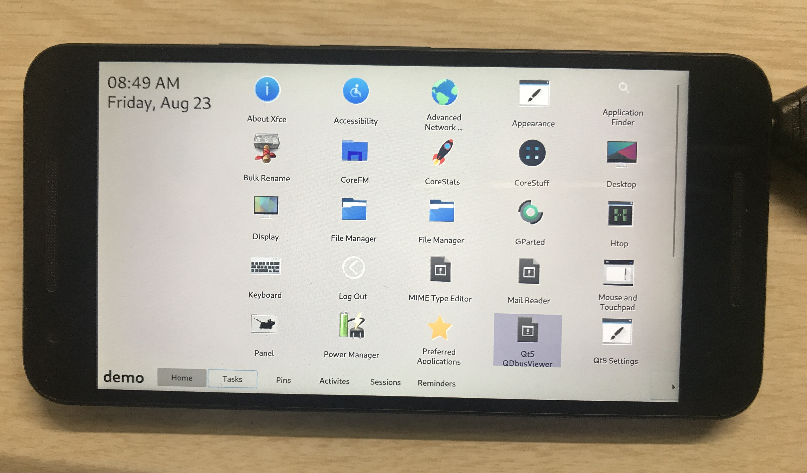

CoreApps
Jump to navigation
Jump to search
|
 CoreApps running on LG Nexus 5x (bullhead) | |
| Name | CoreApps |
|---|---|
| Toolkit | Qt 5 |
| In postmarketOS | |
| Package | corefm |
| Status | Available |
{kind=link}
A set of apps with a constant looks across them and able to run on slower systems without hardware acceleration.
Status
Apps work smoothly on most devices with a working display, both with and without hardware acceleration.
Description
There are some core features that make applications great to use on mobile devices. Some are listed here:
- All the apps are light with just a few dependencies, thus using less RAM
- All the apps are touch-friendly and suitable for phablets and tablets
- Apps use the precious vertical screen real estate properly
There are 19 CoreApps:
- CoreAction - A side bar for showing widgets
- CorePins - A bookmarking app.
- CoreArchiver - Archiver to create and extract archives.
- CoreFm - A lightweight file-manager
- CoreGarage - A settings manager.
- CoreHunt - A file finder utility.
- CoreImage - An image viewer.
- CorePad - A document editor.
- CorePaint - A paint app.
- CorePDF - A PDF viewer.
- CoreRenamer - A batch file re-namer.
- CoreStats - A system resource viewer.
- CoreStuff - An activity viewer/ luncher.
- CoreUniverse - Shows information about apps from the CoreApps family.
- CoreTime - A time related task manager.
- CoreTerminal - A terminal emulator. (Not ported because qtermwidget is not in repo)
- CoreShot - A screen capture utility.
- CoreInfo - A file information tool.
- CoreKeyboard - A virtual keyboard for x11.
Remarks for specific apps
| These are only experience reports, your mileage may vary. |
Tested on Phosh at 1440×720 & 1024x768 and on aarch64 & x86_64. Scaling problems (window too large) can be mostly fixed via Phosh's Scaling methods.
- CorePins - After one file was added, you need to pin other files via the "Open With" dialog in your favorite file managers. Use "Pin it" there and it will open the respective dialog. Or you may use other CoreApps such as CorePad which include a button to pin files.
- CorePaint - Drawing was not possible.
- CoreRenamer - Little bit too wide in portrait.
- CoreShot - Unusable.
- CoreTime - Only usable in landscape. Too wide in portrait and not fixable (
scale-to-fitdoes nothing). - CoreInfo - When inspecting multiple files in portrait mode, columns get quite small.
- CoreKeyboard - Segfault when pressing key (but works on alpine with x11).
- CorePDF - Little bit too wide in portrait.
Usages
- This apps can be used with any Desktop Environment. But recommended with i3wm, matchbox, xfce.
- More usable in horizontal screen rotation.
Issues
- Follow the Display guide to fix an issue where icons and text are small
- Some icons are showing wrong colors, because SVG is not rendering correctly
Links
Photos
CoreFM
CoreImage
CoreShot

Corekeyboard
{kind=link}
{kind=link}
{kind=link}